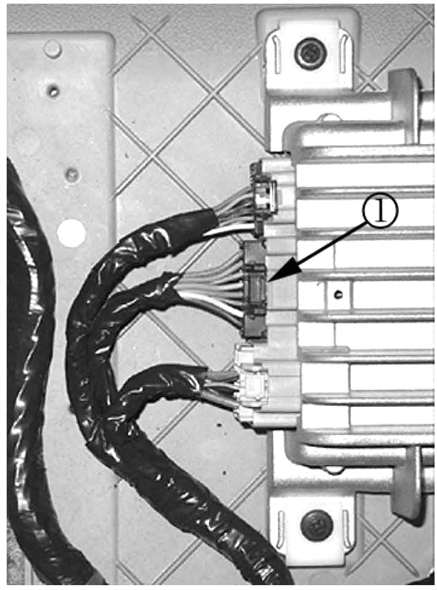
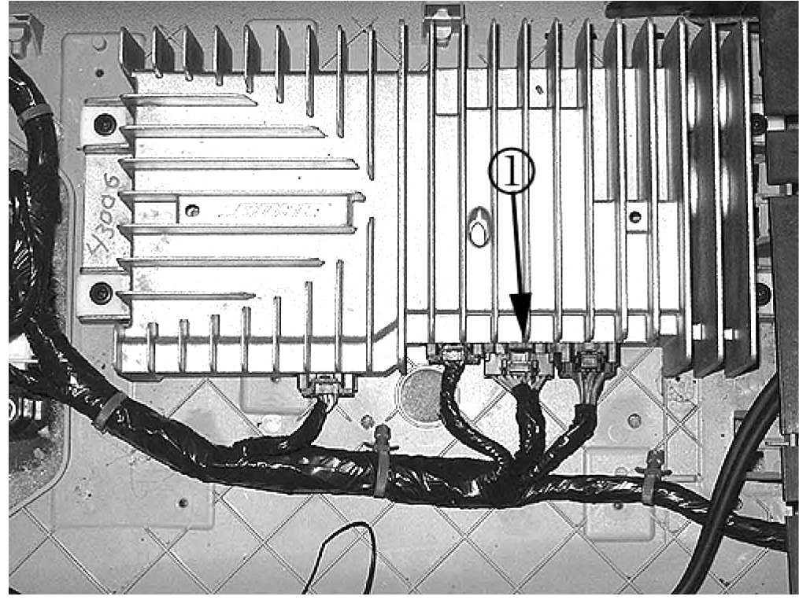
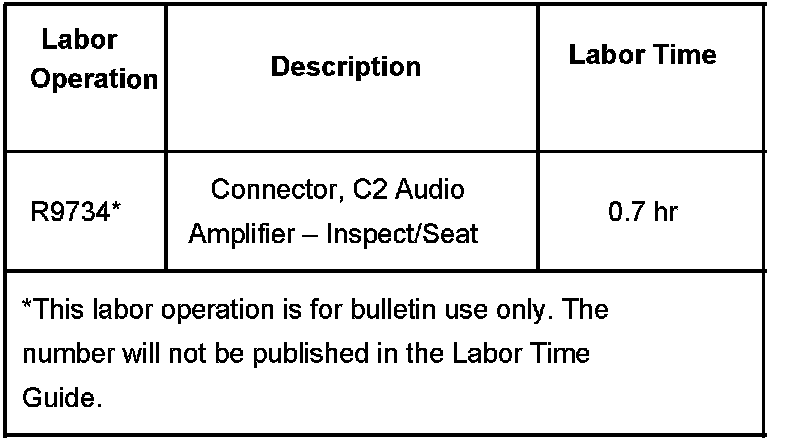

Instruments/Audio - No Speaker Audio/Warning Chimes
Bulletin No.: 07-08-44-008Date: April 18, 2007
TECHNICAL
Subject:
No Audio/No Sound Heard from Radio Speakers, Turn Signals, Hazard Signals and No Warning Chimes When a Door or Liftgate is Opened (Inspect/Seat C2 Audio Amplifier Connector)
Models:
2007 Cadillac Escalade, Escalade ESV, Escalade EXT
2007 Chevrolet Avalanche, Silverado, Suburban, Tahoe
2007 GMC Sierra, Yukon, Yukon XL, Yukon Denali, Yukon Denali XL
with Speakers, Premium Audio w/Amplifier or Rear Stereo Audio (RPOs UQA, UQS or UK6)
Condition
Some customers may comment on one or all of the following conditions related to no audio/no sound:
No sound from one or more of the radio speakers.
No blinking sound heard form the turn signals or hazard signals when on.
No audio warning chimes heard when a door or liftgate is opened.
Cause
The C2 Audio Amplifier Connector may become unseated at the amplifier.
Correction
Inspect/Seat the C2 Audio Amplifier Connector (16-way, Black Connector).
Remove the radio, amplifier, and SIR fuses located in the Underhood Bussed Electrical Center (BEC).

Gain access to the radio speaker amplifier. Refer to Radio Speaker Amplifier Replacement in SI.

Visually inspect and pull on the C2 Audio Amplifier Connector (1).
If the connector is properly seated, then refer to SI for further diagnosis based on the customers condition.
If the connector is loose, then reinstall the C2 Audio Amplifier Connector.
Verify the connector is seated and locked into place.
Install the fuses.
Verify the condition has been fixed and clear any DTCs.
If securing the connector does not correct the condition, refer to SI for further diagnosis and repair.
Install the radio speaker amplifier assembly and any other components removed to gain access to the amplifier. Refer to Radio Speaker Amplifier Replacement in SI.
Warranty Information

For vehicles repaired under warranty, use the table.

Disclaimer